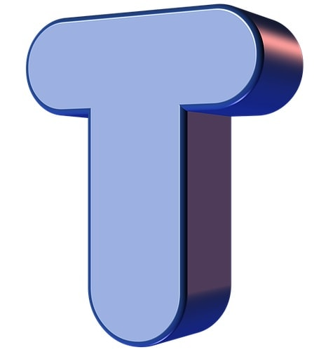
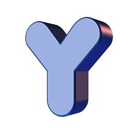
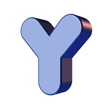

 

SOLO ALGÚNAS
Hola mi amor
Se que quizás estas estás pensando en porque no quise decirte nada en persona, bueno tal vez,
¿pero sabes?, considero desde mi perspectiva que he cambiado mi forma ver las cosas y al mismo
tiempo he cambiado mi forma de quererte y te has dado cuenta, solo me encantaría que con cada
día que pase yo pueda dar lo mejor de mi para que tu te sientas amada, protegida, querida, y
bendecida de estar conmigo, porque ahora en este punto de mi vida me doy cuenta de que en
realidad estoy demasiado bendecido de tenerte como mi amiga, mi compañera sobre todo mi novia,
¿sabes?, eres increíble y simplemente no me canso de preguntar porque me encantas tanto, bueno
eso te lo he dicho y es una de las cosas que me encantan, al mismo tiempo considero que aún no
soy perfecto, tengo que mejorar demasiadas cosas para que en principio no me falte nada y te pueda
dar a ti todo lo que me gustaría, y en realidad son muchas cosas. También sabes que en ocasiones
bromeo con lo de que te hace falta hacer ejercicio, ¿y sabes porque?, he visto muchas personas en
la calle, más acá en Oaxaca, he visto parejas felices, he visto rupturas amorosas, he visto
frustraciones, enojos, engaños, traiciones y demás pero dentro de todas esas cosas he observado el
comportamiento de muchas de las personas que son aparentemente felices, he visto chavas muy
guapas así como a los hombres que todas las mujeres desean, y dentro de todo eso me he dado
cuenta de una simple pero muy significativa cosa que quiero escribirte y me encantaría que lo
tomaras muy en cuenta porque a pesar de ver tantas mujeres lindas, con cuerpo fit y todo eso,
¿sabes qué?, me encantas tú, quizás en un tiempo atrás lo dudé, considero que por mi forma de
pensar pero ahora me doy cuenta de que no necesito a nadie mas solo te necesito a ti, ¿y sabes
qué?, también he considerado que… si quiero una chica fit, quiero que esa chica seas tú, si quiero
una mujer con espíritu emprendedor, quiero que sea tú, y si me siento solo, quiero que seas tú en
quien pueda encontrar una compañía y eso me encanta porque podré ver muchas mujeres así como
tu puedes ver muchos hombres y no es malo que mires a mas hombres no. Y es porque yo no soy
tu dueño, yo soy tu compañero, tu amigo, sobre todo tu novio y la persona en quien puedes confiar
en cualquier momento para cualquier cosa, para ello me estoy preparando, para ello me estoy
educando, y para ello estoy enriqueciendo mi mente para darte lo mejor de mí, la mejor versión de
mi y que tu te sientas que no tienes a cualquier persona de compañero. Recuerdo que dijiste que te
quería dejar por eso no te lo decía en persona, déjame decirte que debes de dejar de pensar en eso,
porque te he comentado muchas veces que las únicas formas de que yo te dejara fueran que me
engañaras o que ya no quisieras estar conmigo, recuérdalo, no dudes que te amo, y que te has
convertido en parte de mis días con quien espero y en un futuro poder compartir todo, si todo lo
que pueda.
Bueno amor espero seguir aumentándole más a esta redacción que tengo para ti, esperando
también que no tomes a mal algunas cosas que he escrito y solo te recuerdo que te amo, también
espero poder escribir no solo cartas sino canciones que aunque se que no te gustan yo las escribo,
TE AMO, SIEMPRE RECUERDALO…
LILO